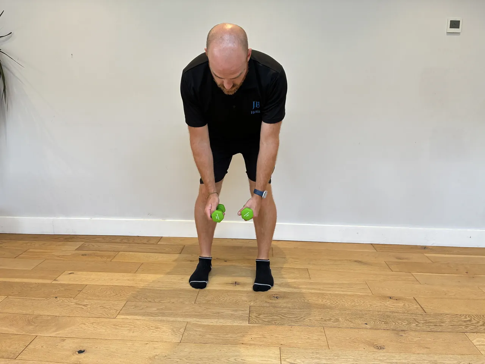
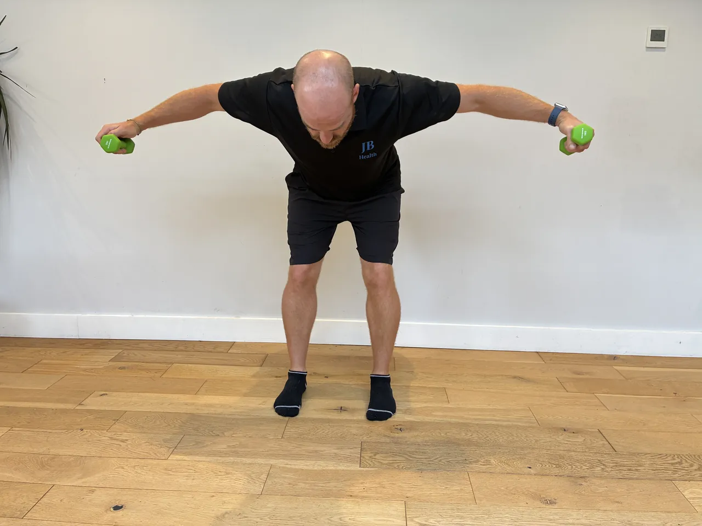
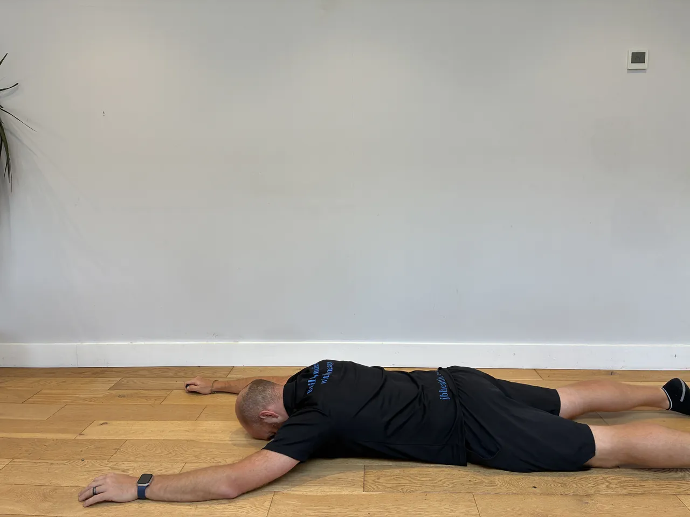
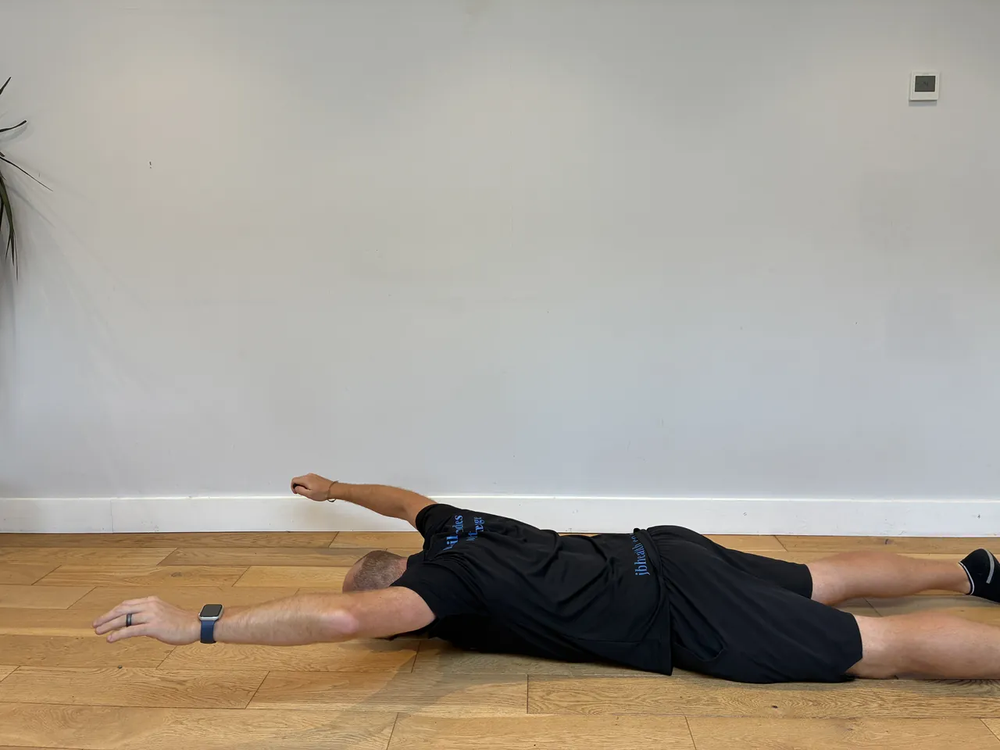

Start: Hold a kettlebell or dumbbell vertically at chest height with both hands.
Focus: Keep chest tall throughout. Keep elbows inside your knees at the bottom.
Movement: Squat down, pushing knees apart with elbows at the bottom. Stand fully.
Start: Stand tall with good posture.
Focus: Keep your front knee over your ankle and torso upright. Control the descent.
Movement: Step one foot back into a lunge, lowering rear knee toward floor. Push through front heel to return.
Start: Stand on one leg holding a dumbbell in the opposite hand at hip height. Slight bend in the standing knee.
Focus: Keep your back flat and hips square throughout. Resist the pelvis rotating toward the free leg.
Movement: Hinge forward at the hip, lowering the dumbbell toward the floor while your rear leg extends behind as a counterbalance until your torso is near parallel. Drive through your heel to return to tall.
Start: Stand or sit with a dumbbell in one hand at shoulder height, palm facing forward. Brace your core to resist the lateral pull of the uneven load.
Focus: Resist any lean to the weighted side — the anti-lateral flexion challenge is part of the exercise. Keep your torso upright throughout.
Movement: Press the dumbbell directly overhead until your arm is fully extended. Lower with control back to shoulder height. Complete all reps on one side before switching.


Start: Stand with a slight hip hinge or lie face down.
Focus: Squeeze shoulder blades together at top. Control the lowering phase.
Movement: Raise both arms out to the sides to shoulder height. Lead with slight external rotation of upper arm.


Start: Stand with feet flat on the floor.
Focus: The single leg eccentric (lowering) phase is the therapeutic component. Go slow.
Movement: Rise onto both feet, transfer to one foot. Lower that heel slowly over 4 seconds. Rise on both feet each rep.
Start: Lie on your side with feet stacked, elbow under shoulder.
Focus: Keep hips pressing forward. Don't let them drop or rotate back.
Movement: Lift hips to create a straight line from head to heels. Hold for prescribed time.


Start: Stand on one leg with soft knee bend.
Focus: Control the movement slowly. The arm reach is the challenge, not speed.
Movement: Reach opposite arm in three directions: forward, out to side, diagonally behind. Return between each reach.
Start: Stand tall with good posture.
Focus: Maintain tall spine throughout. Keep a long stride — don't shuffle.
Movement: Take long step forward, lower into lunge, drive through front heel into next lunge.


Start: Hold dumbbells in front of your thighs and hinge at the hips, pushing them back while lowering the weights dow
Focus: Keep a flat back and feel the hamstring stretch before driving your hips forward to return
Movement: Keep the dumbbells close to your legs throughout. Dumbbells allow a slightly freer range of motion than a barbell
Start: Hold dumbbells at shoulder height with palms facing you.
Focus: Slow rotation as you press engages all three heads of deltoid throughout.
Movement: Press upward while rotating palms away so they face forward at top. Lower, reversing rotation.


Start: Lie face down on the floor or bench, thumbs pointing upward.
Focus: Keep the movement small — quality over height. Lower back stays relaxed.
Movement: Raise both arms into a Y shape, lifting a few centimetres. Hold briefly, lower with control.


Start: Hold a glute bridge at the top with hips fully extended.
Focus: Keep hips absolutely still — no rocking or dropping during the march.
Movement: Alternately lift each foot slightly off the floor in a marching motion. Maintain hip stability.
Start: Stand on one leg with soft bend in knee.
Focus: Keep your standing knee tracking forward and core braced. Control rotation — don't swing.
Movement: Pivot your body 90° left and then 90° right, rotating through hip and ankle.
Start: Hold different weights in each hand — heavier in one, lighter in the other.
Focus: The uneven load creates rotational and lateral demands simultaneously. Stay completely tall and resist all compensations.
Movement: Walk for the prescribed distance resisting the pull of both loads.
Start: Lie on your back with arms extended overhead and legs straight out.
Focus: Press your entire lower back firmly into the floor. Feel like a hollow banana shape.
Movement: Hold position with core tension. If lower back lifts off, raise your legs higher.
Start: Establish a controlled single leg stance with eyes open first. Soft knee bend, tall spine.
Focus: Closing your eyes dramatically increases proprioceptive demand by removing the visual cue. Master eyes-open first.
Movement: Once you have solid eyes-open control, close your eyes and hold balance. Open if needed to reset. Build duration progressively.